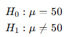

GUÍA PARA EL DISEÑO DE ESPACIOS ACADÉMICOS EN MODALIDAD VIRTUAL
Apreciado autor, por favor diligencie esta ficha a partir de las indicaciones que se dan dentro del documento las cuales sirven para la elaboración de ambientes de aprendizaje en modalidad e-learning (virtual).
Nota: toda la información en gris dentro de cada celda a lo largo de la guía corresponde a explicaciones de lo que se debe escribir, por lo que la puede borrar una vez comprenda el objetivo de cada segmento.
INFORMACIÓN GENERAL DEL ESPACIO ACADÉMICO | |
Unidad académica/administrativa | Escuela de Ciencias Básicas y Aplicadas |
Programa(s) | Ciencia de Datos |
Nombre del espacio académico | Estadística |
Créditos | 3 |
Asesor(a) tecnopedagógico (a) | |
Adecuador(a) pedagógico(a) (lo completa DEE) | |
Fecha elaboración | Marzo – Noviembre de 2026 |
Fecha actualización | |
Autor(es) del diseño del espacio académico (modalidad e-learning) | |
Nombres y Apellidos | Manuel Francisco Romero Ospina |
Perfil profesional (máx. 200 palabras) de cada autor | Profesional con Maestría en Bioinformática y Bioestadística por la Universitat Oberta de Catalunya, equivalente al título de Magíster en Bioinformática en Colombia. Especializado en Estadística Aplicada por la Fundación Universitaria Los Libertadores y Licenciado en Electrónica por la Universidad Pedagógica Nacional. Cuento con más de 15 años de experiencia en docencia universitaria, impartiendo clases de pregrado en Métodos Estadísticos, Probabilidad, Estadística Inferencial, Matemáticas Básicas y Cálculo Diferencial. En el ámbito de postgrado, he enseñado Estadística Aplicada, Muestreo Estadístico, Demografía, Epidemiología y Métodos Estadísticos, tanto en modalidad virtual como presencial. Me destaco como líder en el área de Estadística y consejero académico en programas de pregrado y postgrado en Estadística, con responsabilidad sobre la dirección del área de Matemáticas, la gestión de contrataciones y la planificación de actividades académicas. Mi experiencia incluye la orientación en tecnologías de la información y la comunicación (TICs) y la supervisión de proyectos de grado en estadística e investigación. Entre mis logros más significativos se encuentran la participación en investigaciones universitarias y la publicación de artículos científicos. He demostrado una capacidad notable para adaptarme a diferentes entornos laborales, incluyendo la educación virtual, y para ofrecer una educación de alta calidad. Mi compromiso radica en proporcionar un apoyo integral a la comunidad estudiantil y contribuir al crecimiento de la institución, con un enfoque constante en la excelencia académica y el desarrollo profesional de los estudiantes. |
Link al CVLAC (u otro enlace a su de hoja de vida en línea) | https://scienti.minciencias.gov.co/cvlac/visualizador/generarCurriculoCv.do?cod_rh=0001349114 |
Foto del perfil | |
Datos de contacto (indique su número celular de contacto): 3114888230 | |
Correo electrónico | manromero@unisalle.edu.co |
OPCIÓN METODOLÓGICA DEL ESPACIO ACADÉMICO (redacción dirigida al estudiante)
El espacio académico Estadística cuenta con un énfasis teórico, por lo que la metodología del curso se centra en la resolución de problemas. Por esta razón, a lo largo del curso encontrarás actividades como foros de discusión, informes de análisis estadístico, cuestionarios conceptuales y reportes de resultados.
Aunque este espacio académico se clasifica como teórico, es importante reconocer las aplicaciones que tienen las técnicas estadísticas en los procesos de investigación y en los estudios orientados a la toma de decisiones en diferentes campos disciplinares. En este sentido, la metodología privilegiada será el aprendizaje basado en problemas, lo que te permitirá aplicar progresivamente los conceptos estadísticos abordados durante el curso.
Al inicio del semestre recibirás, por parte del profesor orientador, una situación problema que deberás resolver a lo largo del desarrollo del espacio académico. De manera periódica, y de acuerdo con los temas que se trabajen en cada semana, deberás entregar avances relacionados con la propuesta de solución, la aplicación de procedimientos estadísticos y el análisis de los resultados obtenidos. Para ello, la implementación de los procedimientos y la elaboración de los informes estadísticos se realizará utilizando el software R, mediante la interfaz RStudio.
Las actividades relacionadas con la solución del problema se desarrollarán de forma colaborativa. Para ello, deberán conformar equipos de máximo cuatro integrantes. En cada equipo se designará un líder, quien será responsable de mantener la comunicación directa con el docente orientador y de participar en procesos de coevaluación del trabajo realizado por sus compañeros, con el propósito de fortalecer el compromiso, la participación y el trabajo en equipo.
De manera complementaria, el curso incluirá cuestionarios intermedios y finales de carácter individual, los cuales te permitirán identificar tu nivel de apropiación de los conceptos fundamentales de la estadística descriptiva e inferencial.
Bienvenido al espacio académico Estadística, cuyo propósito es fortalecer tu razonamiento cuantitativo mediante la comprensión y aplicación de técnicas estadísticas para el análisis e interpretación de datos en contextos de investigación y toma de decisiones.
Para lograr esta meta de aprendizaje, el curso se encuentra organizado en tres unidades de estudio. En la primera unidad reconocerás los fundamentos de la estadística y el análisis exploratorio de datos, identificando tipos de variables y aplicando técnicas de estadística descriptiva. En la segunda unidad profundizarás en los principios de la inferencia estadística, abordando procesos como la estimación de parámetros y las pruebas de hipótesis para la toma de decisiones a partir de datos. Finalmente, en la tercera unidad trabajarás en la aplicación de métodos estadísticos, incluyendo técnicas no paramétricas, así como en el uso del software R mediante la interfaz RStudio para el análisis, interpretación y comunicación de resultados.
De manera complementaria, este espacio académico también te permitirá fortalecer tus competencias computacionales mediante el uso del software especializado R en la interfaz RStudio, herramienta que te ayudará a optimizar el procesamiento, análisis e interpretación de datos
Con estos elementos, el curso aportará al desarrollo de la competencia del programa: aplicar métodos estadísticos y herramientas computacionales para el análisis de datos y la generación de información útil para la investigación y la toma de decisiones.
PLAN DE FORMACIÓN DEL ESPACIO ACADÉMICO | |||||
Unidad | Resultados | Contenidos de la unidad | Nombre de las actividades | Semanas de aprendizaje | % de nota |
Unidad 1: Análisis Exploratorio de Datos (AED) | RACB13. Analiza el comportamiento de un conjunto de datos mediante herramientas de estadística descriptiva. | 1. Naturaleza de los datos. | Encuentro virtual 1 (2 horas): Introducción al curso y a la Unidad 1. | Semana 1 | |
Actividad 1: Lectura crítica – 100 Lecturas Selectas. | Semana 1-2 | 10% | |||
Encuentro virtual 2 (2 horas): Análisis exploratorio y uso básico de RStudio. | Semana 3 | ||||
Actividad 2: Aplicación del AED con RStudio. | Semana 4-5 | 20% | |||
Unidad 2: Estadística Inferencial | RACB13. Analiza datos mediante herramientas inferenciales. | 1. Fundamentos de inferencia | Encuentro virtual 3 (2 horas): Introducción a la inferencia estadística. | Semana 6 | |
Actividad 3: Planeación inferencial. | Semana 7-8 | 10% | |||
Encuentro virtual 4 (2 horas): Inferencia estadística en RStudio. | Semana 7 | ||||
Actividad 4: Implementación del análisis inferencial en RStudio. |
| 20% | |||
Unidad 3: Pruebas No Paramétricas | RACB13. Analiza datos mediante métodos no paramétricos. | 1. Métodos no paramétricos | Encuentro virtual 5 (2 horas): Introducción Unidad 3. Métodos no paramétricos Y Pruebas para una muestra (Wilcoxon) Descripción: Introducción a los métodos estadísticos no paramétricos, su justificación y los contextos en los que se utilizan. Se presentará la prueba de Wilcoxon para una muestra y su aplicación en situaciones donde no se cumplen los supuestos de normalidad. | Semana 10 | |
Actividad 5: Selección de prueba no paramétrica. | Semana 11-12 | 15% | |||
Encuentro virtual 6 (2 horas): Implementación en RStudio. | Semana 13 | ||||
Actividad 6: Implementación final del análisis no paramétrico. Descripción: Desarrollo de un taller aplicado en RStudio, con ejecución de pruebas no paramétricas y entrega de un informe técnico final con interpretación de resultados. |
| 20% | |||
Evaluación final de conocimientos Descripción: Desarrollo de un cuestionario tipo Saber Pro, orientado al análisis, interpretación y toma de decisiones estadísticas. | Semana 15 | 5% | |||
Encuentro virtual 7 Cierre del curso. | Semana 16 | ||||
* Relacione los resultados de aprendizaje que le entregó la dirección del programa o que aparecen en el syllabus. Si no se cuenta con esta información formúlelos teniendo en cuenta los niveles de pensamiento (Crear, Aplicar, Evaluar, Analizar y Comprender), en la siguiente estructura: Verbo (acorde al nivel de pensamiento elegido) – Objeto de conocimiento y Condición de calidad, contexto de aplicación o el para qué del aprendizaje.
**Procure considerar entre 2 y máximo 3 actividades por unidad de estudio, estas actividades no consideran los encuentros virtuales. Importante contar con una evaluación de conocimiento al cierre del curso, esta evaluación es obligatoria solo en cursos de pregrado.
***Tenga en cuenta que las asignaturas de pregrado se diseñan con una duración de 16 semanas (excepto las asignaturas de 2 créditos o menos, las cuales se programan a 8 semanas) y las de posgrado 9 semanas.
****Indique el valor (porcentaje) que cada actividad tendrá sobre la nota final. Tenga presente que ninguna actividad debe superar el 30%. Es importante que la suma de todos los porcentajes sea igual a 100%. Complete con un “-” las actividades que no sean evaluables.
*****Numere y nombre los encuentros virtuales que se desarrollarán a lo largo de cada unidad de aprendizaje. Tenga en cuenta que se debe desarrollar mínimo 1 encuentro por cada unidad, uno al inicio y uno al cierre del curso. Sin embargo, puede precisar de un mayor número de encuentros, si lo desea.
UNIDAD DIDÁCTICA 1. Análisis Exploratorio de Datos (AED) | |||||||||||||
Descripción general | |||||||||||||
Resumen | El análisis exploratorio de datos constituye una etapa fundamental dentro del proceso de análisis estadístico y de ciencia de datos, ya que permite comprender la estructura, características y comportamiento de un conjunto de datos antes de aplicar técnicas inferenciales o modelos más complejos. En esta unidad se abordan los conceptos esenciales relacionados con la naturaleza de los datos, los tipos de variables, las escalas de medición y el uso de gráficos y medidas descriptivas para identificar patrones, tendencias y relaciones entre variables. El propósito de esta unidad es que el estudiante desarrolle la capacidad de analizar conjuntos de datos mediante herramientas de estadística descriptiva y visualización, utilizando software especializado como RStudio. A través de actividades de lectura crítica y aplicación práctica, el estudiante aprenderá a interpretar información estadística y comunicar resultados de manera clara y fundamentada. | ||||||||||||
Preguntas orientadoras |
| ||||||||||||
Detalles de la Unidad | |||||||||||||
ACTIVIDADES DE APRENDIZAJE (redacción dirigida al estudiante) | |||||||||||||
ACTIVIDAD 1. Lectura crítica – 100 Lecturas Selectas | |||||||||||||
¿Qué vamos a lograr? Desarrollar la capacidad de analizar críticamente el papel del razonamiento cuantitativo y del pensamiento estadístico en la interpretación de información basada en datos. | |||||||||||||
¿Cómo lo vamos a lograr? Apreciado estudiante, el razonamiento cuantitativo y el pensamiento estadístico constituyen competencias fundamentales dentro de la formación en ciencia de datos y estadística, ya que permiten interpretar información numérica, comprender fenómenos a partir de datos y tomar decisiones basadas en evidencia. En la actualidad, la capacidad de analizar críticamente la información cuantitativa es esencial en diversos contextos académicos y profesionales, donde los datos se convierten en un recurso clave para la comprensión de problemas y la generación de conocimiento. En este sentido, la alfabetización de datos implica no solo la capacidad de realizar cálculos, sino también la habilidad de interpretar información estadística, analizar resultados y comprender cómo los datos pueden ser utilizados para explicar situaciones reales. El desarrollo de estas habilidades fortalece el pensamiento analítico y crítico, competencias fundamentales para el ejercicio profesional en estadística y ciencia de datos. Teniendo en cuenta lo anterior, en esta primera actividad usted realizará un análisis crítico de un material seleccionado, el cual podrá corresponder a una lectura propuesta por el programa o a un recurso audiovisual (como una película), de acuerdo con las orientaciones institucionales vigentes. Este material estará relacionado con la estadística, la probabilidad o el uso de datos en contextos reales, con el propósito de reflexionar sobre la importancia del pensamiento estadístico y su papel en la interpretación de la información. Durante el desarrollo de la actividad, se espera que usted identifique las ideas principales del material seleccionado, analice los argumentos presentados y establezca una relación entre su contenido y el papel de la estadística en la comprensión de fenómenos reales. Este proceso permitirá desarrollar una visión crítica sobre el uso de los datos y su impacto en la toma de decisiones. Como resultado de la actividad, el estudiante elaborará un miniensayo reflexivo escrito, con una extensión aproximada entre 500 y 800 palabras, en el cual analizará las ideas principales del material seleccionado y argumentará la importancia del pensamiento estadístico en el análisis de datos. Adicionalmente, se realizará una videopresentación de corta duración (entre 2 y 3 minutos), en la que se expondrán de manera clara y sintética las principales conclusiones, fortaleciendo así las habilidades de comunicación oral y síntesis.Las actividades se desarrollarán en grupos, cuya conformación será definida por el profesor orientador, de acuerdo con las dinámicas del curso. El miniensayo deberá entregarse en formato digital (PDF o Word), mientras que la videopresentación podrá ser entregada mediante enlace (YouTube, Drive u otra plataforma). La duración del video se establece con el fin de garantizar la viabilidad del proceso de evaluación, considerando el número de estudiantes del curso. A través de esta actividad, que se desarrollará de manera individual, se busca fortalecer las competencias relacionadas con la lectura crítica, la argumentación escrita y la comunicación oral, habilidades esenciales para la formación de profesionales capaces de interpretar información cuantitativa y comunicar resultados de manera clara y fundamentada. Para iniciar esta actividad, se sugieren las siguientes recomendaciones:
Producto esperado: El producto final de la actividad será un miniensayo reflexivo escrito, acompañado de una videopresentación, en los cuales se evidencie la comprensión del texto, la capacidad de análisis crítico y la relevancia del pensamiento estadístico en la interpretación de datos. | |||||||||||||
¿Cómo lo vamos a evaluar?
| |||||||||||||
Información para el equipo de producción de la DEE | |||||||||||||
Herramientas de la plataforma virtual (Marque con una X solo si conoce la herramienta a utilizar):
Herramientas web externas a la plataforma [Puede consultar algunas herramientas en https://h5p.org/h5p/embed/123342] Indique si utilizará alguna____________ | |||||||||||||
Lecturas complementarias
| |||||||||||||
ACTIVIDAD 2. Aplicación del Análisis Exploratorio de Datos con RStudio | |||||||||||||
¿Qué vamos a lograr? Aplicar técnicas de análisis exploratorio de datos utilizando RStudio para describir, visualizar e interpretar un conjunto de datos mediante gráficos estadísticos y medidas descriptivas. | |||||||||||||
¿Cómo lo vamos a lograr? Apreciado estudiante, el Análisis Exploratorio de Datos (AED) constituye una etapa fundamental dentro del proceso de análisis estadístico y de ciencia de datos, ya que permite comprender la estructura, características y comportamiento de un conjunto de datos antes de aplicar técnicas inferenciales o modelos más complejos. A través de la exploración de los datos mediante gráficos y medidas estadísticas es posible identificar patrones, tendencias, valores atípicos y relaciones entre variables, lo cual facilita la interpretación de la información y apoya la toma de decisiones basadas en evidencia. Esta actividad es importante porque permite desarrollar habilidades para describir, visualizar e interpretar datos de manera sistemática, utilizando herramientas estadísticas y computacionales. En el contexto de la ciencia de datos, el uso de software especializado como R y su entorno de desarrollo RStudio facilita el procesamiento de grandes volúmenes de información, la generación de visualizaciones estadísticas y el cálculo de medidas descriptivas que permiten comprender mejor el comportamiento de los datos. Teniendo en cuenta lo anterior, el estudiante deberá desarrollar un análisis exploratorio de un conjunto de datos utilizando RStudio. En esta actividad se espera que identifique los tipos de variables presentes en la base de datos, aplique gráficos exploratorios adecuados y calcule medidas estadísticas que permitan describir el comportamiento de las variables analizadas. Este proceso permitirá reconocer patrones en los datos, detectar posibles anomalías y comprender mejor la información disponible antes de aplicar técnicas inferenciales. De acuerdo con las orientaciones del curso, estas actividades podrán desarrollarse de manera individual o grupal, según lo defina el profesor para cada cohorte. Como resultado de la actividad, los resultados del análisis deberán presentarse mediante un informe técnico en formato R Markdown (HTML), en el cual se evidencie el uso de RStudio a través de la inclusión de código, visualizaciones, resultados y su respectiva interpretación. Asimismo, el informe podrá incorporar expresiones matemáticas y fórmulas en LaTeX, favoreciendo una presentación clara, estructurada y alineada con las buenas prácticas en la comunicación de resultados en ciencia de datos. La actividad podrá desarrollarse de manera grupal, según las orientaciones del curso, favoreciendo la organización del trabajo y la discusión de decisiones metodológicas. A través de esta actividad, que se desarrollará de manera individual, se espera fortalecer las competencias relacionadas con el análisis estadístico, la interpretación de resultados y el uso de herramientas computacionales para el análisis de datos. Asimismo, se busca que el estudiante desarrolle habilidades para comunicar resultados estadísticos de manera clara y fundamentada, aspecto fundamental en el ejercicio profesional dentro del campo de la estadística y la ciencia de datos. Para iniciar esta actividad, se sugieren las siguientes recomendaciones:
Producto esperado: El producto final de la actividad será un taller de análisis exploratorio de datos desarrollado en entorno virtual, en el cual se incluya la descripción de la base de datos utilizada, la generación de gráficos exploratorios mediante RStudio, el cálculo de medidas estadísticas descriptivas y una interpretación fundamentada de los resultados obtenidos. El taller deberá presentarse en formato digital mediante un informe en R Markdown (HTML), integrando el código utilizado, las salidas generadas y la explicación de los hallazgos. La entrega deberá evidenciar una estructura clara y organizada, así como el uso adecuado de herramientas computacionales y la comprensión del comportamiento de los datos. Checklist finalBase de datos cargada en RStudioVariables identificadasGráficos generadosMedidas calculadasInterpretación realizadaInforme estructurado | |||||||||||||
¿Cómo lo vamos a evaluar?
| |||||||||||||
Información para el equipo de producción de la DEE | |||||||||||||
Elija la Herramienta de la plataforma virtual para el diseño de la actividad (Marque con una X):
| |||||||||||||
Lecturas complementarias Canavos, G. C. (1994). Probabilidad y estadística: Aplicaciones y métodos. McGraw-Hill. https://gsosa61.wordpress.com/wp-content/uploads/2008/03/10-canavos-g-probabilidad-y-estadistica-aplicaciones-y-metodos.pdf Crawley, M. J. (2015). Statistics: An introduction using R (2nd ed.). Wiley. https://minerva.it.manchester.ac.uk/~saralees/statbook4.pdf Moore, D. S., McCabe, G. P., & Craig, B. A. (2017). Introduction to the practice of statistics (10th ed.). W. H. Freeman. https://www.academia.edu/37128157/Introduction_to_the_Practice_of_Statistics_6e Posit. (s. f.). Posit Cloud. https://posit.cloud/ Posit team. (2025). RStudio: Integrated development environment for R. Posit Software, PBC. https://posit.co/ Wackerly, D. D., Mendenhall, W., & Scheaffer, R. L. (2009). Estadística matemática con aplicaciones (7.ª ed.). Cengage Learning. https://www.cimat.mx/ciencia_para_jovenes/bachillerato/libros/%5BWackerly%2CMendenhall%2CScheaffer%5DEstadistica_Matematica_con_Aplicaciones.pdf Walpole, R. E., Myers, R. H., Myers, S. L., & Ye, K. (2012). Probabilidad y estadística para ingeniería y ciencias (9.ª ed.). Pearson. https://intranetua.uantof.cl/facultades/csbasicas/matematicas/academicos/jreyes/DOCENCIA/APUNTES/APUNTES%20PDF/Probabilidad%20y%20Estadistica%20para%20Ingenieria%20y%20Ciencias%20-%20Jay%20Devore%20-%20Septima%20Edicion.pdf | |||||||||||||
UNIDAD DIDÁCTICA 2. Estadística Inferencial | |||||||||||||
Descripción general | |||||||||||||
Resumen | La estadística inferencial permite realizar conclusiones sobre una población a partir de la información obtenida de una muestra. A diferencia de la estadística descriptiva, que se enfoca en resumir y visualizar los datos disponibles, la inferencia estadística utiliza principios probabilísticos para estimar parámetros poblacionales y evaluar hipótesis mediante procedimientos estadísticos formales. En esta unidad se abordarán los fundamentos de la inferencia estadística, incluyendo los conceptos de población, muestra, parámetros y estadísticos, así como los métodos de estimación mediante intervalos de confianza y las pruebas de hipótesis. Además, se desarrollará la aplicación práctica de estas herramientas utilizando RStudio, con el fin de que el estudiante pueda analizar datos, interpretar resultados estadísticos y comunicar conclusiones basadas en evidencia. | ||||||||||||
Preguntas orientadoras |
| ||||||||||||
Detalles de la Unidad | |||||||||||||
ACTIVIDADES DE APRENDIZAJE (redacción dirigida al estudiante) | |||||||||||||
ACTIVIDAD 3. Planeación inferencial | |||||||||||||
¿Qué vamos a lograr? Identificar y seleccionar los métodos de inferencia estadística adecuados para analizar un conjunto de datos y responder una pregunta de investigación. | |||||||||||||
¿Cómo lo vamos a lograr? Apreciado estudiante, la estadística inferencial constituye una herramienta fundamental dentro del análisis de datos, ya que permite realizar conclusiones sobre una población a partir de la información obtenida de una muestra. A través de la inferencia estadística es posible estimar parámetros poblacionales y evaluar hipótesis mediante procedimientos estadísticos que permiten determinar si los resultados observados en los datos son consistentes con una afirmación planteada o si pueden atribuirse al azar. Esta actividad es importante porque permite desarrollar habilidades para formular problemas estadísticos, seleccionar métodos inferenciales adecuados y estructurar un proceso de análisis basado en evidencia. Antes de aplicar pruebas estadísticas o realizar cálculos en software especializado, es necesario realizar una adecuada planeación del análisis, identificando las variables involucradas, el parámetro de interés y el tipo de prueba estadística que permitirá responder la pregunta de investigación. En el contexto de la ciencia de datos, esta etapa de planeación es esencial porque orienta el análisis estadístico y permite seleccionar los procedimientos más apropiados para interpretar los datos. A través de este proceso se establecen las hipótesis estadísticas, se determina el tipo de inferencia a realizar y se identifican las herramientas que posteriormente serán implementadas mediante software especializado como R y RStudio. Teniendo en cuenta lo anterior, el estudiante deberá realizar la planeación del análisis inferencial del problema trabajado durante el semestre. En esta actividad se espera que identifique las variables relevantes de la base de datos, determine el parámetro poblacional de interés y seleccione las pruebas estadísticas apropiadas para evaluar las hipótesis planteadas. Este proceso permitirá estructurar de manera clara el procedimiento estadístico que posteriormente será implementado en RStudio. Como resultado de la actividad, se elaborará un taller de planeación inferencial en formato R Markdown (HTML), en el cual se presente la relación entre las variables analizadas, el tipo de parámetro poblacional, las hipótesis estadísticas planteadas y el método inferencial seleccionado. El documento deberá integrar código, salidas del análisis y la formulación de expresiones matemáticas mediante LaTeX cuando aplique, permitiendo justificar de manera estructurada el proceso de análisis estadístico que se implementará en la siguiente actividad del curso. La actividad podrá desarrollarse de manera grupal, según las orientaciones del curso, favoreciendo la organización del trabajo y la discusión de decisiones metodológicas. A través de esta actividad se busca fortalecer las competencias relacionadas con el razonamiento estadístico, la formulación de hipótesis y la toma de decisiones metodológicas, así como la capacidad para estructurar y sustentar un proceso de análisis estadístico de manera clara, rigurosa y fundamentada. Para desarrollar la actividad:
Producto esperado: El producto final de la actividad será un taller de planeación inferencial desarrollado en entorno virtual, en el cual se evidencie el proceso de estructuración del análisis estadístico. Este deberá incluir la identificación de las variables analizadas, el parámetro poblacional de interés, la formulación adecuada de las hipótesis estadísticas, la selección del tipo de prueba estadística correspondiente y la justificación técnica del método inferencial utilizado, en función de las características del problema y de los datos disponibles. El análisis deberá ser apoyado mediante RStudio, evidenciando la exploración de los datos y la verificación de las condiciones necesarias para la selección del método inferencial. Los resultados deberán presentarse en un informe en formato R Markdown (HTML), integrando código, salidas del análisis, visualizaciones y su respectiva interpretación. Asimismo, el documento podrá incorporar expresiones matemáticas y fórmulas en LaTeX cuando aplique, favoreciendo una presentación clara y estructurada. El taller se desarrollará de manera grupal, según las orientaciones del curso, y deberá entregarse en formato digital, con una organización coherente, argumentada y técnicamente fundamentada, evidenciando la capacidad para la toma de decisiones en el análisis estadístico. | |||||||||||||
¿Cómo lo vamos a evaluar?
| |||||||||||||
Información para el equipo de producción de la DEE | |||||||||||||
Elija la Herramienta de la plataforma virtual para el diseño de la actividad (Marque con una X):
| |||||||||||||
Lecturas complementarias
| |||||||||||||
ACTIVIDAD 4. Implementación del análisis inferencial en RStudio | |||||||||||||
¿Qué vamos a lograr? Aplicar métodos de inferencia estadística en RStudio, mediante la construcción e interpretación de intervalos de confianza y pruebas de hipótesis para analizar datos y formular conclusiones fundamentadas. | |||||||||||||
¿Cómo lo vamos a lograr? Con base en la planeación inferencial de la actividad anterior, en esta fase deberá implementar los métodos estadísticos seleccionados para analizar los datos y evaluar las hipótesis planteadas. La inferencia estadística permite tomar decisiones sobre una población a partir de una muestra, utilizando intervalos de confianza y pruebas de hipótesis para estimar parámetros y validar afirmaciones. Para ello, empleará R y RStudio como herramientas de análisis, aplicando estos métodos a las variables definidas y realizando una interpretación adecuada de los resultados. Instrucciones para el desarrollo de la actividad:
Producto esperado: El taller se desarrollará de manera grupal, según las orientaciones del curso, y deberá entregarse en formato digital, con una organización coherente, argumentada y técnicamente fundamentada, evidenciando la capacidad para la toma de decisiones en el análisis estadístico. | |||||||||||||
¿Cómo lo vamos a evaluar?
| |||||||||||||
Información para el equipo de producción de la DEE | |||||||||||||
Herramientas de la plataforma virtual (Marque con una X):
Herramientas web externas a la plataforma [Puede consultar algunas herramientas en https://h5p.org/h5p/embed/123342] Indique si utilizará alguna____________ | |||||||||||||
Lecturas complementarias
| |||||||||||||
UNIDAD DIDÁCTICA 3. Pruebas No Paramétricas | |||||||||||||
Descripción general | |||||||||||||
Resumen | En el análisis de datos es común encontrar situaciones en las cuales los supuestos estadísticos de los métodos paramétricos no se cumplen, particularmente el supuesto de normalidad de los datos o la homogeneidad de varianzas. En estos casos, los métodos no paramétricos constituyen una alternativa robusta para realizar análisis estadísticos sin depender de dichos supuestos. En esta unidad se introducen los fundamentos de las pruebas estadísticas no paramétricas, así como su aplicación para el análisis de datos cuando los métodos paramétricos no son adecuados. A través del uso de RStudio, el estudiante aprenderá a seleccionar, aplicar e interpretar pruebas como Wilcoxon, Mann–Whitney y Kruskal–Wallis, desarrollando habilidades para analizar datos reales y comunicar resultados estadísticos de manera clara y fundamentada. El propósito de formación de esta unidad es que el estudiante reconozca cuándo utilizar métodos no paramétricos, implemente estas pruebas mediante herramientas computacionales y analice sus resultados dentro de un proceso de análisis de datos aplicado. | ||||||||||||
Preguntas orientadoras |
| ||||||||||||
Detalles de la Unidad | |||||||||||||
ACTIVIDADES DE APRENDIZAJE (redacción dirigida al estudiante) | |||||||||||||
ACTIVIDAD 5. Selección de prueba no paramétrica | |||||||||||||
¿Qué vamos a lograr? Identificar y justificar la prueba estadística no paramétrica adecuada para analizar un conjunto de datos, considerando las características de las variables, la estructura de la muestra y los supuestos del análisis. | |||||||||||||
¿Cómo lo vamos a lograr? Apreciado estudiante, En muchos procesos de análisis estadístico, los datos no cumplen los supuestos requeridos por los métodos paramétricos, como la normalidad o la homogeneidad de varianzas. En estos casos, las pruebas no paramétricas constituyen una alternativa adecuada para analizar la información de manera robusta. Pruebas como Wilcoxon, Mann–Whitney y Kruskal–Wallis permiten comparar grupos y evaluar hipótesis cuando los datos no siguen distribuciones normales o cuando el tamaño de muestra es reducido. Por ello, seleccionar correctamente la prueba estadística es una etapa fundamental del análisis, ya que garantiza la validez de los resultados. En esta actividad, deberá analizar el problema del semestre y determinar la prueba no paramétrica más adecuada para el conjunto de datos trabajado. Para ello, deberá identificar el tipo de variables, la cantidad de grupos o muestras y las condiciones del análisis. Como producto, elaborará un diagrama metodológico de decisión en el que represente de forma clara el proceso seguido para seleccionar la prueba estadística. Este deberá evidenciar los criterios utilizados y la relación entre las características de los datos y la prueba elegida. Además, incluirá una justificación técnica breve que sustente su decisión. Esta actividad es de carácter individual y busca fortalecer sus competencias en la selección de métodos estadísticos, el análisis de datos y la comunicación de decisiones metodológicas. Para desarrollar la actividad:
Producto de la actividadEl producto final de la actividad será un taller de selección de métodos no paramétricos desarrollado en entorno virtual, orientado a la identificación y justificación de la prueba estadística no paramétrica adecuada para analizar un conjunto de datos, considerando las características de las variables, la estructura de la muestra y los supuestos del análisis. El taller deberá incluir la identificación de las variables analizadas, la caracterización de la muestra, la definición del problema o pregunta de análisis, la selección de la prueba no paramétrica correspondiente y la justificación técnica de la elección realizada, en función de las condiciones de los datos y la ausencia de supuestos paramétricos. El análisis deberá ser apoyado mediante RStudio, evidenciando la exploración de los datos y la verificación de las condiciones necesarias para la aplicación del método no paramétrico. Los resultados deberán presentarse en un informe en formato R Markdown (HTML), integrando código, salidas del análisis, visualizaciones y su respectiva interpretación. Asimismo, el documento podrá incorporar expresiones matemáticas y fórmulas en LaTeX cuando aplique, favoreciendo una presentación clara y estructurada. El taller se desarrollará de manera grupal, según las orientaciones del curso, y deberá entregarse en formato digital, con una organización coherente, argumentada y técnicamente fundamentada, evidenciando la capacidad para la toma de decisiones en el análisis estadístico. | |||||||||||||
¿Cómo lo vamos a evaluar?
| |||||||||||||
Información para el equipo de producción de la DEE | |||||||||||||
Elija la Herramienta de la plataforma virtual para el diseño de la actividad (Marque con una X):
| |||||||||||||
Lecturas complementarias | |||||||||||||
ACTIVIDAD 6. Implementación del análisis no paramétrico en RStudio | |||||||||||||
¿Qué vamos a lograr? Aplicar pruebas estadísticas no paramétricas en RStudio para analizar un conjunto de datos y formular conclusiones fundamentadas a partir de los resultados obtenidos. | |||||||||||||
¿Cómo lo vamos a lograr? Apreciado estudiante, Una vez seleccionada la prueba estadística no paramétrica en la actividad anterior, el siguiente paso consiste en implementarla en RStudio para analizar el conjunto de datos del curso e interpretar los resultados obtenidos. El uso de herramientas como R y RStudio permite ejecutar análisis estadísticos de manera reproducible, facilitando la aplicación de pruebas no paramétricas y la interpretación de sus resultados en contextos reales de análisis de datos. En esta actividad, deberá aplicar la prueba no paramétrica seleccionada, analizar los resultados obtenidos —incluyendo el estadístico de prueba y el valor p— y formular conclusiones que permitan interpretar el comportamiento de las variables en función del problema planteado. Como producto final, elaborará un informe técnico de análisis no paramétrico, en el cual presentará el procedimiento realizado en RStudio, los resultados obtenidos y su respectiva interpretación. Esta actividad es de carácter individual y busca fortalecer sus competencias en la aplicación de métodos no paramétricos, el uso de herramientas computacionales y la interpretación de resultados estadísticos. Para desarrollar la actividad:
Producto de la actividad El producto final de la actividad será un taller desarrollado en entorno virtual, orientado a identificar y justificar la prueba estadística no paramétrica adecuada para analizar un conjunto de datos, considerando las características de las variables, la estructura de la muestra y los supuestos del análisis. El taller deberá incluir la identificación de las variables, la caracterización de la muestra, la definición del problema o pregunta de análisis, la selección de la prueba no paramétrica correspondiente y la justificación técnica de la elección realizada, en función de las condiciones de los datos y la ausencia de supuestos paramétricos. El análisis deberá ser apoyado mediante RStudio, evidenciando la exploración de los datos y la verificación de las condiciones necesarias para la aplicación del método no paramétrico. Los resultados deberán presentarse en un informe en formato R Markdown (HTML), integrando código, salidas del análisis, visualizaciones y su respectiva interpretación. Asimismo, el documento podrá incorporar expresiones matemáticas y fórmulas en LaTeX cuando aplique, favoreciendo una presentación clara y estructurada. El taller se desarrollará de manera grupal, según las orientaciones del curso, y deberá entregarse en formato digital, con una organización coherente, argumentada y técnicamente fundamentada, evidenciando la capacidad para la toma de decisiones en el análisis estadístico. | |||||||||||||
¿Cómo lo vamos a evaluar?
| |||||||||||||
Información para el equipo de producción de la DEE | |||||||||||||
Herramientas de la plataforma virtual (Marque con una X):
Herramientas web externas a la plataforma [Puede consultar algunas herramientas en https://h5p.org/h5p/embed/123342] Indique si utilizará alguna____________ | |||||||||||||
Lecturas complementarias Canavos, G. C. (1994). Probabilidad y estadística: Aplicaciones y métodos. McGraw-Hill. https://gsosa61.wordpress.com/wp-content/uploads/2008/03/10-canavos-g-probabilidad-y-estadistica-aplicaciones-y-metodos.pdf Crawley, M. J. (2015). Statistics: An introduction using R (2nd ed.). Wiley. https://minerva.it.manchester.ac.uk/~saralees/statbook4.pdf Moore, D. S., McCabe, G. P., & Craig, B. A. (2017). Introduction to the practice of statistics (10th ed.). W. H. Freeman. https://www.academia.edu/37128157/Introduction_to_the_Practice_of_Statistics_6e Posit. (s. f.). Posit Cloud. https://posit.cloud/ Posit team. (2025). RStudio: Integrated development environment for R. Posit Software, PBC. https://posit.co/ Wackerly, D. D., Mendenhall, W., & Scheaffer, R. L. (2009). Estadística matemática con aplicaciones (7.ª ed.). Cengage Learning. https://www.cimat.mx/ciencia_para_jovenes/bachillerato/libros/%5BWackerly%2CMendenhall%2CScheaffer%5DEstadistica_Matematica_con_Aplicaciones.pdf Walpole, R. E., Myers, R. H., Myers, S. L., & Ye, K. (2012). Probabilidad y estadística para ingeniería y ciencias (9.ª ed.). Pearson. https://intranetua.uantof.cl/facultades/csbasicas/matematicas/academicos/jreyes/DOCENCIA/APUNTES/APUNTES%20PDF/Probabilidad%20y%20Estadistica%20para%20Ingenieria%20y%20Ciencias%20-%20Jay%20Devore%20-%20Septima%20Edicion.pdf | |||||||||||||
Actividad 7. Evaluación final | |||||||||||||||||||||||||||||||||||||||||||||||||||||||||||||||||||||||||||||||||||||||||||||||||||||||||||||||||
Hemos llegado al final de nuestro curso, por lo que es momento de poner a prueba los conocimientos construidos a lo largo del espacio. Te recomendamos recapitular los elementos vistos e iniciar el intento. Preguntas: 1. Una empresa de comercio electrónico desea analizar la eficiencia de su sistema de distribución. Para ello registra el tiempo de entrega (en minutos) de 12 pedidos realizados durante un mismo día.
2. Un centro de investigación educativa analiza el número de estudiantes que utilizan una plataforma virtual durante 10 días consecutivos.
El coordinador académico desea conocer el valor central que divide los datos en dos partes iguales. ¿Cuál es la mediana del número de estudiantes?
3. Una empresa de transporte analiza el número de entregas realizadas por 8 conductores durante una jornada.
El gerente desea identificar la diferencia entre el valor máximo y el valor mínimo de entregas realizadas. ¿Cuál es el rango de entregas?
4. Un científico de datos analiza el rendimiento de un algoritmo de predicción. Para ello registra el tiempo de ejecución (segundos) en 9 pruebas diferentes.
Durante el análisis exploratorio, el investigador sospecha que existe un valor atípico. ¿Cuál observación probablemente representa un outlier?
5. Un investigador en ciencias sociales toma una muestra de 36 personas para estudiar el ingreso mensual promedio. Se obtienen los siguientes resultados estadísticos: Media = 2.400.000 pesos El investigador desea calcular el error estándar de la media. ¿Cuál es su valor aproximado?
6. Una analista de talento humano desea estudiar la relación entre las horas de capacitación recibidas por los empleados y su puntaje en una prueba de desempeño. Ambas variables son cuantitativas. ¿Cuál es la representación gráfica más adecuada para iniciar el análisis de la relación entre estas dos variables?
7. En una base de datos de estudiantes universitarios se registran las siguientes variables:
Un docente desea seleccionar únicamente las variables cuantitativas para calcular medidas como media y desviación estándar. ¿Cuál combinación contiene solamente variables cuantitativas?
8. Un laboratorio farmacéutico desea estimar el peso promedio de cierto tipo de tabletas. Para ello toma una muestra aleatoria de tabletas y construye un intervalo de confianza del 95% para la media poblacional. La interpretación correcta de ese intervalo es:
9. Una investigadora desea evaluar si el tiempo promedio que tardan los estudiantes en resolver una prueba virtual es diferente de 50 minutos. Para ello formula las hipótesis:  El tipo de contraste planteado es:
10. Un analista de calidad quiere verificar si la proporción de productos defectuosos en una línea de producción es mayor al 3%. Después de realizar la prueba estadística obtiene un valor p = 0.012 y trabaja con un nivel de significancia de 0.05. ¿Cuál es la decisión estadística correcta?
11. En una investigación educativa se comparan los puntajes promedio de matemáticas entre dos grupos independientes de estudiantes. Antes del análisis, el investigador verifica que los datos cumplen aproximadamente el supuesto de normalidad. ¿Cuál es la prueba más adecuada para comparar los promedios de ambos grupos?
12. Un equipo de analítica de datos compara el tiempo promedio de entrega entre dos centros logísticos independientes de una empresa. Antes del análisis se verifica que los datos siguen una distribución aproximadamente normal. El objetivo es comparar las medias de ambos centros de distribución. ¿Cuál es la prueba estadística más apropiada?
13. Una empresa compara el nivel de satisfacción de clientes entre dos sedes independientes, pero los datos recolectados en escala ordinal no cumplen normalidad. ¿Cuál es la prueba estadística más adecuada?
14. Un investigador desea comparar el nivel de respuesta de tres tratamientos independientes aplicados a tres grupos de pacientes. Los datos no cumplen el supuesto de normalidad. ¿Cuál es la prueba más adecuada para este análisis?
15. En un estudio clínico se mide el dolor de un mismo grupo de pacientes antes y después de una intervención. La variable es ordinal y no se asume normalidad. ¿Cuál es la prueba más adecuada para comparar ambas mediciones?
16. Un equipo de ciencia de datos analiza la variable “ingreso mensual” y obtiene los siguientes estadísticos:
Con base en estos resultados, la distribución de los ingresos probablemente presenta:
17. Una coordinadora académica analiza los resultados de un curso y encuentra que la nota promedio de los estudiantes fue 3.6, con una desviación estándar de 0.2. En otro curso, la nota promedio también fue 3.6, pero con una desviación estándar de 0.9. ¿Cuál interpretación es correcta?
18. Un docente de estadística diseña una estrategia de análisis para una base de datos real. Primero identifica tipos de variables, revisa gráficos, calcula medidas descriptivas y detecta posibles valores atípicos. Después, con base en esos resultados, decide qué prueba inferencial aplicar. La razón principal por la que el docente inicia con el análisis exploratorio de datos es que este permite:
19. Un analista de datos estudia la distribución de ingresos de una población y obtiene los siguientes resultados: Media = 85 Con base en esta información, el analista concluye que la distribución presenta:
20. Una empresa de comercio electrónico desea comparar el nivel de satisfacción de los clientes entre dos plataformas de atención: chat en línea (Grupo A) y atención telefónica (Grupo B). Los clientes califican el servicio en una escala ordinal de 1 a 10. Los resultados obtenidos fueron: Grupo A (chat): 8, 7, 9, 6, 8, 7, 9 Grupo B (teléfono): 5, 6, 7, 6, 5, 6, 7 El analista de datos observa que las calificaciones corresponden a datos ordinales y que no se puede asumir normalidad en las distribuciones. Con base en la naturaleza de los datos y el objetivo del estudio, ¿cuál es la prueba estadística más apropiada para comparar ambos grupos?
21 Un investigador en educación analiza el impacto de una nueva metodología de enseñanza en el desempeño de 8 estudiantes. Para ello se registran los puntajes obtenidos por los mismos estudiantes antes y después de aplicar la metodología.
El investigador considera que los datos no cumplen el supuesto de normalidad y que las mediciones corresponden a los mismos estudiantes evaluados en dos momentos. ¿Cuál es la prueba estadística más adecuada para evaluar el cambio en los puntajes?
22. Un investigador en ciencias sociales desea analizar el nivel de satisfacción laboral de empleados pertenecientes a tres departamentos diferentes de una empresa: administración, ventas y tecnología. La satisfacción se mide en una escala ordinal de 1 a 10. Los resultados obtenidos fueron: Administración 6, 7, 8, 6, 7, 7 Ventas 5, 6, 6, 5, 7, 6 Tecnología 8, 9, 8, 9, 7, 8 El investigador determina que los datos no siguen una distribución normal y desea comparar si existen diferencias entre los tres grupos. ¿Cuál es la prueba estadística más apropiada para realizar el análisis?
| |||||||||||||||||||||||||||||||||||||||||||||||||||||||||||||||||||||||||||||||||||||||||||||||||||||||||||||||||
Información para el equipo de producción de la DEE | |||||||||||||||||||||||||||||||||||||||||||||||||||||||||||||||||||||||||||||||||||||||||||||||||||||||||||||||||
Elija la Herramienta de la plataforma virtual para el diseño de la actividad (Marque con una X):
|